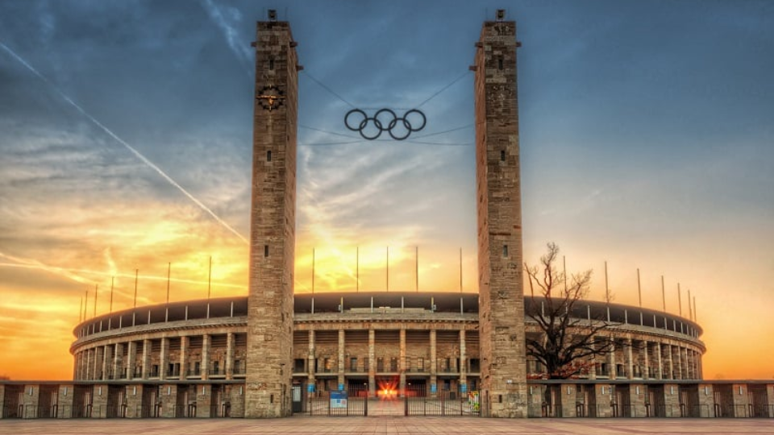
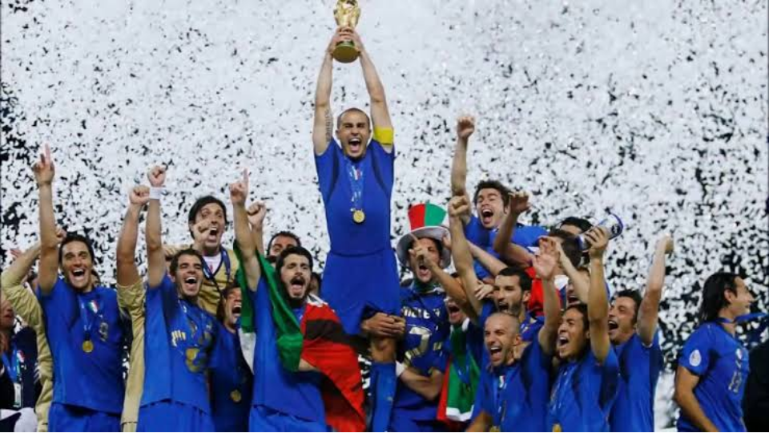

Em 2006, quando a Alemanha sediou a copa, o mundo vivia um período marcado pela continuidade da Guerra ao Terror liderada pelos Estados Unidos, pelas guerras no Afeganistão e no Iraque e pelo fortalecimento da globalização econômica. Ao mesmo tempo, economias emergentes como China, Índia e Brasil ampliavam sua participação no cenário internacional, indicando uma gradual transição para uma ordem mundial mais multipolar. O avanço da internet, da telefonia móvel e das tecnologias digitais transformava cada vez mais a comunicação e os negócios em escala global.
A Alemanha, país-sede do torneio, encontrava-se em um momento de estabilidade política e fortalecimento econômico. Governada pela chanceler Angela Merkel, que havia assumido o cargo poucos meses antes da Copa, o país consolidava sua posição como a maior economia da Europa e uma das principais potências industriais do mundo. Com aproximadamente 82 milhões de habitantes e um PIB superior a US$ 2,8 trilhões, a Alemanha exercia grande influência nas decisões políticas e econômicas da União Europeia.
A realização da Copa exigiu investimentos significativos em infraestrutura esportiva, transporte e modernização urbana. Estima-se que os investimentos tenham ultrapassado US$ 4 bilhões. Grande parte dos recursos foi destinada à modernização e ampliação dos estádios, melhoria das redes ferroviárias, aeroportos, telecomunicações e sistemas de segurança. Diferentemente de outras edições, a Alemanha aproveitou amplamente estruturas já existentes, reduzindo a necessidade de grandes obras de construção.


A Copa de 2006 é frequentemente apontada como um dos exemplos mais bem-sucedidos de legado entre os torneios recentes. Os estádios continuaram sendo amplamente utilizados por clubes e pela seleção nacional, enquanto os investimentos em mobilidade urbana e transporte beneficiaram a população após o evento. Além disso, a competição fortaleceu a imagem internacional da Alemanha como um país moderno, eficiente, acolhedor e capaz de organizar eventos de grande porte.
De forma geral, o maior legado da Copa de 2006 foi a renovação da imagem internacional da Alemanha no século XXI. O torneio contribuiu para reforçar sua liderança econômica e política na Europa, além de demonstrar a capacidade do país de combinar desenvolvimento econômico, infraestrutura de qualidade e organização eficiente em um evento de alcance global.
A final foi disputada no Estádio Olímpico de Berlim diante de aproximadamente 69 mil espectadores. A seleção da Itália conquistou seu quarto título mundial ao derrotar a França na disputa por pênaltis, após empate por 1 a 1 no tempo regulamentar e na prorrogação.